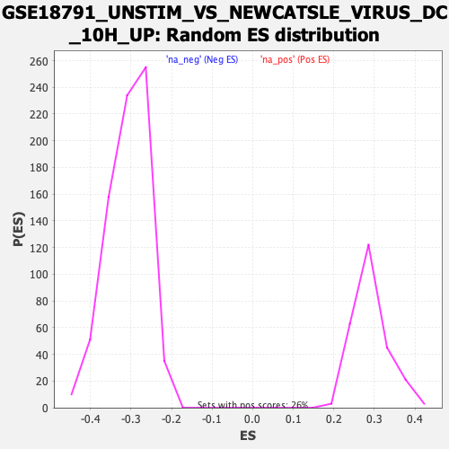

| | | Dataset | DE_genes |
| Phenotype | NoPhenotypeAvailable |
| Upregulated in class | na_neg |
| GeneSet | GSE18791_UNSTIM_VS_NEWCATSLE_VIRUS_DC_10H_UP |
| Enrichment Score (ES) | -0.5326575 |
| Normalized Enrichment Score (NES) | -1.7349786 |
| Nominal p-value | 0.0 |
| FDR q-value | 3.3634217E-4 |
| FWER p-Value | 0.006 |
Table: GSEA Results Summary
 Fig 1: Enrichment plot: GSE18791_UNSTIM_VS_NEWCATSLE_VIRUS_DC_10H_UP
Fig 1: Enrichment plot: GSE18791_UNSTIM_VS_NEWCATSLE_VIRUS_DC_10H_UP
Profile of the Running ES Score & Positions of GeneSet Members on the Rank Ordered List
| PROBE | GENE SYMBOL | GENE_TITLE | RANK IN GENE LIST | RANK METRIC SCORE | RUNNING ES | CORE ENRICHMENT | | 1 | TNFSF14 | | | 125 | 5.540 | 0.0237 | No |
| 2 | CDK4 | | | 608 | 1.451 | 0.0005 | No |
| 3 | IRF5 | | | 629 | 1.404 | 0.0072 | No |
| 4 | YOD1 | | | 1028 | 0.822 | -0.0141 | No |
| 5 | NUDT4 | | | 1217 | 0.665 | -0.0226 | No |
| 6 | MTFMT | | | 1283 | 0.622 | -0.0233 | No |
| 7 | PDE6D | | | 1796 | 0.392 | -0.0545 | No |
| 8 | CASD1 | | | 1893 | 0.357 | -0.0587 | No |
| 9 | NDUFA5 | | | 1919 | 0.350 | -0.0584 | No |
| 10 | HIVEP3 | | | 2008 | 0.324 | -0.0623 | No |
| 11 | RNF7 | | | 2050 | 0.312 | -0.0631 | No |
| 12 | RAB33A | | | 2052 | 0.311 | -0.0614 | No |
| 13 | LCMT2 | | | 2211 | 0.264 | -0.0702 | No |
| 14 | FKBP14 | | | 2333 | 0.237 | -0.0768 | No |
| 15 | FAM98B | | | 2343 | 0.234 | -0.0760 | No |
| 16 | ZNF823 | | | 2410 | 0.225 | -0.0791 | No |
| 17 | IFNGR2 | | | 2488 | 0.211 | -0.0829 | No |
| 18 | PHF1 | | | 2795 | 0.162 | -0.1020 | No |
| 19 | C9orf40 | | | 3065 | 0.135 | -0.1188 | No |
| 20 | ARL2BP | | | 3124 | 0.128 | -0.1219 | No |
| 21 | AKTIP | | | 3390 | 0.107 | -0.1386 | No |
| 22 | NOL11 | | | 3789 | 0.082 | -0.1641 | No |
| 23 | EXO5 | | | 4286 | 0.054 | -0.1963 | No |
| 24 | MAP1A | | | 4311 | 0.052 | -0.1976 | No |
| 25 | IL16 | | | 4376 | 0.049 | -0.2015 | No |
| 26 | FBXO45 | | | 5203 | 0.006 | -0.2555 | No |
| 27 | MEX3B | | | 5380 | -0.003 | -0.2670 | No |
| 28 | CMTM4 | | | 5453 | -0.007 | -0.2716 | No |
| 29 | NCAPH | | | 5482 | -0.008 | -0.2734 | No |
| 30 | FBXO33 | | | 5958 | -0.036 | -0.3043 | No |
| 31 | CCDC168 | | | 6015 | -0.040 | -0.3077 | No |
| 32 | C5orf24 | | | 6063 | -0.043 | -0.3105 | No |
| 33 | POLR2I | | | 6177 | -0.051 | -0.3176 | No |
| 34 | TRMT10C | | | 6268 | -0.057 | -0.3232 | No |
| 35 | ZYG11B | | | 6465 | -0.070 | -0.3356 | No |
| 36 | CDCA4 | | | 6599 | -0.080 | -0.3439 | No |
| 37 | RANGRF | | | 6652 | -0.085 | -0.3468 | No |
| 38 | ACVR2B | | | 6781 | -0.094 | -0.3546 | No |
| 39 | SPDL1 | | | 6817 | -0.096 | -0.3563 | No |
| 40 | ASTE1 | | | 6845 | -0.098 | -0.3575 | No |
| 41 | SNAI3 | | | 6907 | -0.103 | -0.3609 | No |
| 42 | GATC | | | 6997 | -0.110 | -0.3661 | No |
| 43 | DFFA | | | 7110 | -0.120 | -0.3728 | No |
| 44 | USP38 | | | 7556 | -0.157 | -0.4010 | No |
| 45 | RRS1 | | | 7688 | -0.170 | -0.4086 | No |
| 46 | TRAF3 | | | 7754 | -0.175 | -0.4118 | No |
| 47 | FAM98A | | | 7880 | -0.187 | -0.4189 | No |
| 48 | IFNGR1 | | | 7948 | -0.193 | -0.4222 | No |
| 49 | TIMM21 | | | 8140 | -0.212 | -0.4335 | No |
| 50 | KIAA0232 | | | 8336 | -0.233 | -0.4449 | No |
| 51 | SEC14L1 | | | 8500 | -0.251 | -0.4541 | No |
| 52 | MRPS27 | | | 8584 | -0.260 | -0.4581 | No |
| 53 | GEMIN6 | | | 8625 | -0.264 | -0.4591 | No |
| 54 | RUNX1 | | | 8651 | -0.268 | -0.4592 | No |
| 55 | TFPT | | | 8829 | -0.290 | -0.4692 | No |
| 56 | BCCIP | | | 8865 | -0.293 | -0.4698 | No |
| 57 | MED8 | | | 8907 | -0.299 | -0.4707 | No |
| 58 | YLPM1 | | | 8913 | -0.300 | -0.4693 | No |
| 59 | ENDOG | | | 8951 | -0.304 | -0.4700 | No |
| 60 | SLC9A5 | | | 9045 | -0.317 | -0.4743 | No |
| 61 | HRAS | | | 9295 | -0.347 | -0.4886 | No |
| 62 | CSRP1 | | | 9392 | -0.357 | -0.4928 | No |
| 63 | ARL3 | | | 9420 | -0.361 | -0.4925 | No |
| 64 | SMAD5 | | | 9616 | -0.391 | -0.5030 | No |
| 65 | DDX20 | | | 9657 | -0.397 | -0.5033 | No |
| 66 | ZNF251 | | | 9677 | -0.400 | -0.5023 | No |
| 67 | COQ9 | | | 9900 | -0.432 | -0.5143 | No |
| 68 | ZNF559 | | | 9944 | -0.438 | -0.5146 | No |
| 69 | POLR3B | | | 10055 | -0.455 | -0.5192 | No |
| 70 | CDR2 | | | 10142 | -0.469 | -0.5221 | No |
| 71 | FBXO21 | | | 10241 | -0.483 | -0.5258 | No |
| 72 | BRF2 | | | 10268 | -0.486 | -0.5247 | No |
| 73 | ZCCHC17 | | | 10279 | -0.488 | -0.5225 | No |
| 74 | TSPYL5 | | | 10379 | -0.502 | -0.5261 | No |
| 75 | SKP2 | | | 10464 | -0.514 | -0.5287 | No |
| 76 | PRKAB2 | | | 10468 | -0.514 | -0.5259 | No |
| 77 | ATPAF2 | | | 10501 | -0.520 | -0.5250 | No |
| 78 | INIP | | | 10520 | -0.523 | -0.5232 | No |
| 79 | HMG20B | | | 10574 | -0.533 | -0.5236 | No |
| 80 | HSD17B10 | | | 10660 | -0.547 | -0.5260 | No |
| 81 | SNX30 | | | 10675 | -0.550 | -0.5238 | No |
| 82 | PPCS | | | 10679 | -0.550 | -0.5208 | No |
| 83 | ATXN1 | | | 10716 | -0.555 | -0.5200 | No |
| 84 | GXYLT1 | | | 10796 | -0.567 | -0.5219 | No |
| 85 | ZNF317 | | | 10911 | -0.584 | -0.5260 | No |
| 86 | ZNF420 | | | 11014 | -0.600 | -0.5292 | Yes |
| 87 | NACC2 | | | 11025 | -0.602 | -0.5264 | Yes |
| 88 | BLMH | | | 11069 | -0.609 | -0.5257 | Yes |
| 89 | ZNF35 | | | 11102 | -0.615 | -0.5243 | Yes |
| 90 | CXXC1 | | | 11135 | -0.623 | -0.5228 | Yes |
| 91 | AVPI1 | | | 11141 | -0.624 | -0.5195 | Yes |
| 92 | POLR2D | | | 11224 | -0.641 | -0.5212 | Yes |
| 93 | CIAPIN1 | | | 11254 | -0.647 | -0.5194 | Yes |
| 94 | LIMA1 | | | 11351 | -0.667 | -0.5218 | Yes |
| 95 | SUV39H2 | | | 11373 | -0.671 | -0.5194 | Yes |
| 96 | POLR1C | | | 11374 | -0.671 | -0.5155 | Yes |
| 97 | UBAC1 | | | 11416 | -0.682 | -0.5143 | Yes |
| 98 | MTOR | | | 11455 | -0.689 | -0.5128 | Yes |
| 99 | MMS19 | | | 11458 | -0.689 | -0.5090 | Yes |
| 100 | HAUS8 | | | 11558 | -0.710 | -0.5114 | Yes |
| 101 | NOL12 | | | 11642 | -0.732 | -0.5126 | Yes |
| 102 | SRGAP1 | | | 11698 | -0.742 | -0.5119 | Yes |
| 103 | NUDT16 | | | 11702 | -0.743 | -0.5078 | Yes |
| 104 | ADRM1 | | | 11714 | -0.744 | -0.5043 | Yes |
| 105 | LRRC14 | | | 11724 | -0.746 | -0.5006 | Yes |
| 106 | SLTM | | | 11822 | -0.766 | -0.5025 | Yes |
| 107 | TRIM32 | | | 11896 | -0.784 | -0.5028 | Yes |
| 108 | FRAT2 | | | 11920 | -0.790 | -0.4998 | Yes |
| 109 | TAF5L | | | 11980 | -0.801 | -0.4990 | Yes |
| 110 | FAM78A | | | 12004 | -0.806 | -0.4959 | Yes |
| 111 | MRTO4 | | | 12009 | -0.807 | -0.4915 | Yes |
| 112 | FAM89B | | | 12101 | -0.830 | -0.4927 | Yes |
| 113 | TRPV2 | | | 12137 | -0.839 | -0.4902 | Yes |
| 114 | IGF1R | | | 12139 | -0.839 | -0.4854 | Yes |
| 115 | DCAF4 | | | 12236 | -0.862 | -0.4868 | Yes |
| 116 | TP53RK | | | 12317 | -0.882 | -0.4869 | Yes |
| 117 | EIF4ENIF1 | | | 12363 | -0.892 | -0.4848 | Yes |
| 118 | UMPS | | | 12375 | -0.895 | -0.4803 | Yes |
| 119 | TAF4 | | | 12465 | -0.919 | -0.4809 | Yes |
| 120 | C17orf80 | | | 12487 | -0.925 | -0.4769 | Yes |
| 121 | TRMT1 | | | 12548 | -0.941 | -0.4755 | Yes |
| 122 | PABPN1 | | | 12561 | -0.944 | -0.4708 | Yes |
| 123 | URB2 | | | 12686 | -0.976 | -0.4733 | Yes |
| 124 | MRPL34 | | | 12712 | -0.986 | -0.4693 | Yes |
| 125 | PTPDC1 | | | 12730 | -0.991 | -0.4647 | Yes |
| 126 | TBC1D10A | | | 12738 | -0.994 | -0.4595 | Yes |
| 127 | CCDC12 | | | 12856 | -1.030 | -0.4612 | Yes |
| 128 | SRSF8 | | | 12877 | -1.038 | -0.4566 | Yes |
| 129 | BAHD1 | | | 12887 | -1.041 | -0.4512 | Yes |
| 130 | NAIF1 | | | 12978 | -1.070 | -0.4509 | Yes |
| 131 | CDC40 | | | 12994 | -1.073 | -0.4457 | Yes |
| 132 | PHF23 | | | 12997 | -1.075 | -0.4397 | Yes |
| 133 | PNP | | | 13131 | -1.114 | -0.4420 | Yes |
| 134 | SLC19A2 | | | 13193 | -1.135 | -0.4394 | Yes |
| 135 | NTMT1 | | | 13272 | -1.164 | -0.4379 | Yes |
| 136 | LRR1 | | | 13391 | -1.210 | -0.4386 | Yes |
| 137 | RNF4 | | | 13418 | -1.219 | -0.4333 | Yes |
| 138 | DHX30 | | | 13448 | -1.231 | -0.4282 | Yes |
| 139 | ENC1 | | | 13640 | -1.306 | -0.4331 | Yes |
| 140 | ZC3HC1 | | | 13650 | -1.312 | -0.4262 | Yes |
| 141 | PRDM15 | | | 13686 | -1.323 | -0.4209 | Yes |
| 142 | DNAJC11 | | | 13689 | -1.325 | -0.4134 | Yes |
| 143 | RXRA | | | 13776 | -1.371 | -0.4112 | Yes |
| 144 | PET100 | | | 13855 | -1.402 | -0.4082 | Yes |
| 145 | MRFAP1L1 | | | 13859 | -1.404 | -0.4003 | Yes |
| 146 | PLXNA1 | | | 13939 | -1.438 | -0.3972 | Yes |
| 147 | SDHAF1 | | | 13964 | -1.452 | -0.3905 | Yes |
| 148 | KCTD12 | | | 13985 | -1.461 | -0.3834 | Yes |
| 149 | MFN2 | | | 14006 | -1.473 | -0.3762 | Yes |
| 150 | ATP2A3 | | | 14029 | -1.485 | -0.3691 | Yes |
| 151 | RPL7L1 | | | 14049 | -1.499 | -0.3618 | Yes |
| 152 | GBA2 | | | 14121 | -1.549 | -0.3575 | Yes |
| 153 | CERK | | | 14177 | -1.590 | -0.3520 | Yes |
| 154 | DSTYK | | | 14217 | -1.610 | -0.3453 | Yes |
| 155 | VASH1 | | | 14234 | -1.622 | -0.3370 | Yes |
| 156 | ORC2 | | | 14263 | -1.639 | -0.3294 | Yes |
| 157 | FIS1 | | | 14366 | -1.697 | -0.3263 | Yes |
| 158 | ASB6 | | | 14399 | -1.716 | -0.3186 | Yes |
| 159 | RPS19BP1 | | | 14416 | -1.726 | -0.3097 | Yes |
| 160 | RNF185 | | | 14426 | -1.735 | -0.3003 | Yes |
| 161 | FAM168B | | | 14436 | -1.741 | -0.2909 | Yes |
| 162 | MTFR1L | | | 14473 | -1.768 | -0.2831 | Yes |
| 163 | THBD | | | 14484 | -1.776 | -0.2736 | Yes |
| 164 | PLEKHJ1 | | | 14497 | -1.786 | -0.2641 | Yes |
| 165 | DOK2 | | | 14537 | -1.816 | -0.2562 | Yes |
| 166 | ACAD8 | | | 14547 | -1.827 | -0.2463 | Yes |
| 167 | SURF6 | | | 14563 | -1.842 | -0.2367 | Yes |
| 168 | KLHL21 | | | 14584 | -1.855 | -0.2273 | Yes |
| 169 | TRIT1 | | | 14601 | -1.874 | -0.2176 | Yes |
| 170 | SGK1 | | | 14823 | -2.084 | -0.2201 | Yes |
| 171 | NME3 | | | 14941 | -2.220 | -0.2150 | Yes |
| 172 | EHMT1 | | | 14963 | -2.256 | -0.2034 | Yes |
| 173 | KLHL42 | | | 14970 | -2.269 | -0.1908 | Yes |
| 174 | PHF13 | | | 15015 | -2.328 | -0.1803 | Yes |
| 175 | TRAK2 | | | 15021 | -2.335 | -0.1672 | Yes |
| 176 | SSH2 | | | 15125 | -2.502 | -0.1596 | Yes |
| 177 | ZCCHC24 | | | 15166 | -2.569 | -0.1474 | Yes |
| 178 | FHOD1 | | | 15179 | -2.596 | -0.1333 | Yes |
| 179 | EXOSC7 | | | 15186 | -2.621 | -0.1186 | Yes |
| 180 | ASB1 | | | 15275 | -2.857 | -0.1080 | Yes |
| 181 | CD2BP2 | | | 15290 | -2.888 | -0.0923 | Yes |
| 182 | TACC1 | | | 15297 | -2.924 | -0.0759 | Yes |
| 183 | BCR | | | 15393 | -3.529 | -0.0618 | Yes |
| 184 | PPP1R14B | | | 15410 | -3.677 | -0.0417 | Yes |
| 185 | SFN | | | 15427 | -3.952 | -0.0201 | Yes |
| 186 | TUBA4A | | | 15432 | -3.985 | 0.0026 | Yes |
Table: GSEA details [plain text format]

Fig 2: GSE18791_UNSTIM_VS_NEWCATSLE_VIRUS_DC_10H_UP: Random ES distribution
Gene set null distribution of ES for GSE18791_UNSTIM_VS_NEWCATSLE_VIRUS_DC_10H_UP